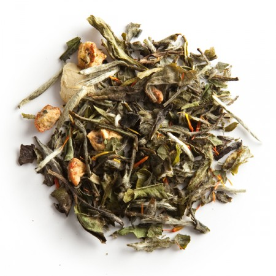

Le thé noir, que les chinois appellent thé rouge en réfénrece à la couleur
cuivrée de son infusion, est un thé complètement oxydé. La fabrication du thé noir se fait en cinq étapes : le flétrissage, le roulage, l'oxydation, la torréfaction et le triage.Cette dernière opération permet de différencier les différents grades
Blue of london
A partir de 7,50€
Thé des lords
A partir de 8,20€
Thé des vahinés
A partir de 9,40€
Thé vert
Réputé pour ses nombreuses vertus grâce à sa richesse en antioxydant, le thé vert désaltère, tonifie, apaise, fortifie, et procure une incontestable sensation de bien-être. Délicat et peu amer, il est apprécié à tout moment de la journée et propose une palette d'arômes très variés : végétal, minéral, floral, fruité.
Thé du hammam
A partir de 8,40€
Vive le thé !
A partir de 6,80€
Thé de alizés
A partir de 9,30€
Oolong
Les Oolong, que les chinois appellent thés bleu-vert en référence à la couleur de leurs feuilles infusées, sont des thés semi-oxydés : leur oxydation n'a pas été menée à son terme. Spécialités de Chine et de Taïwan, il en existe une grande variété, en fonction de la région de culture, de l'espèce du théier ou encore du processus de fabrication
Vive les fêtes
A partir de 11,10€
Fleur d'oranger Oolong
A partir de 10,90€
Oolong 7 agrumes
A partir de 13,20€
Thé blanc
Le thé blanc est une spécialité de la province chinoise du Fujian. de toutes les familles de thé, c'est celle dont la feuille est la moins transformée par rapport à son état naturel. Non oxydé, le thé blanc ne subit que deux opérations : un flétrissage et une dessiccation. Il en existe deux grands types de thés blancs : Les Aiguilles d'argent et les Bai Mu Dan.
Thé des songes blanc

A partir de 12,00€
Bai mu dan
A partir de 9,50€
Aiguilles d'argent
A partir de 47,20€
Rooibos
Le Rooibos (appelé thé rouge bien qu'il ne s'agisse pas de thé) est une plante poussant uniquement en Afrique du Sud et qui ne contient pas du tout de théine. Son infusion donne une boisson très agréable, ronde et légèrement sucrée. Riche en antioxydants, faible en tanins et dénué de théine, le Rooios peut être dégusté en journée comme en soirée